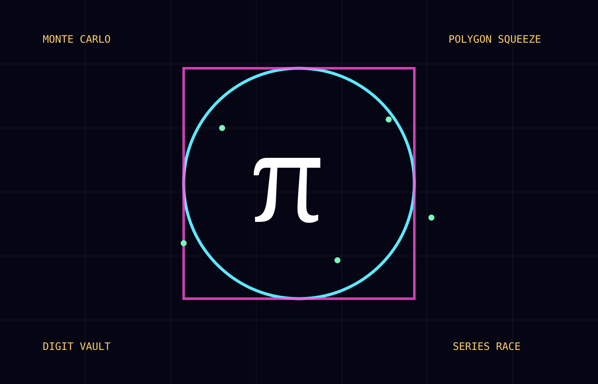

Measure.
Squeeze. Sample.
Six machines approach π from different directions: exact geometry, polygon bounds, random points, an infinite series, random needles, and the decimal expansion itself.

The Circle Console
Choose a radius. The machine calculates diameter, circumference, and area from π.
Archimedes' Squeeze
For a unit circle, an inscribed regular n-gon gives a lower estimate n·sin(π/n), while a circumscribed n-gon gives an upper estimate n·tan(π/n) for π. Increase the sides and watch the gap collapse.
Monte Carlo Rain
Throw random points into a unit square. The share landing inside the quarter-circle estimates π/4.
The Leibniz Marathon
π = 4(1 − 1/3 + 1/5 − 1/7 + …). It is exact in the infinite limit but famously slow.
slow
closer
still slow
≈ 5 digits
Buffon's Needle Floor
Drop needles of length half the line spacing. The crossing probability is 1/π, so π can be estimated from total drops divided by crossings. This is a geometric-probability demonstration, not an efficient digit algorithm.
The Digit Vault
Search a curated opening block of π's decimal expansion. A match proves only that the string occurs in this stored prefix—not that π is normal.
The regular sequence pauses here. After four natural-number museums, π opens a different kind of door: a number between 3 and 4 whose decimal never ends and whose algebraic status is fundamentally different.